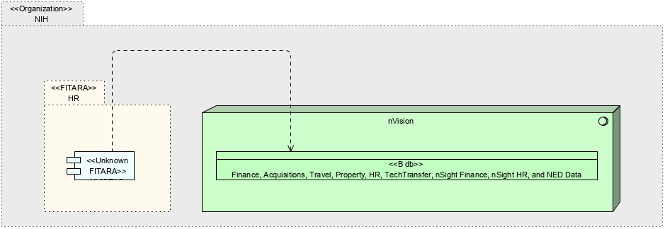

|
|
|
nVision : System Software (in HR Systems diagram / nSight ArchiMate Diagram / NCI Business Applications Archimate Diagram / ITRC / NCI Email Group Generator Archimate Diagram / NED Census Validation ArchiMate Diagram / OBF Directors's Reserve Tool ArchiMate Diagram / CBIIT DOC-centric ArchiMate Diagram / GFET ArchiMate Diagram / OA DOC-centric ArchiMate Diagram / FCAS ArchiMate Diagram / COPP ArchiMate Diagram / eContracts ArchiMate Diagram / OASYS ArchiMate Diagram / DFAS (aka mypay) ArchiMate Diagram / BIIS ArchiMate Diagram / SMART HR ArchiMate Diagram / ITAS ArchiMate Diagram / WiTS ArchiMate Diagram / NED ArchiMate Diagram / EMIS ArchiMate Diagram / ePMAP ArchiMate Diagram / nVision HR ArchiMate Diagram / e-HARTS ArchiMate Diagram / FPS II ArchiMate Diagram / HRDB ArchiMate Diagram / Sunapsis ArchiMate Diagram / OHAM AIDS Tracker ArchiMate Diagram / Budget Analytical Dashboard ArchiMate Diagram / CCR Closeout Dashboard ArchiMate Diagram / CCR CRTA Renewal ArchiMate Diagram / CCR Title 42 Batch Renewal ArchiMate Diagram / ITRC DOC-centric ArchiMate Diagram / Qlikview Budget Data Model ArchiMate Diagram / QlikView HR Data Model ArchiMate Diagram / CBIIT Report Builder ArchiMate Diagram / NED AO validation Report ArchiMate Diagram / NED Report Builder ArchiMate Diagram / OBF EOY Closeout Dashboard ArchiMate Diagram / OBF Closeout Summary ArchiMate Diagram / CBIIT Receiveing Dashboard ArchiMate Diagram / STEPS Dashboard ArchiMate Diagram / DCEG DOC-centric ArchiMate Diagram / CAS ArchiMate Diagram / >$3K Checklist ArchiMate Diagram / AC Systems Diagram / OWPD Registration ArchiMate Diagram / OWPD DOC-centric ArchiMate Diagram / NCF ArchiMate Diagram / ETD ArchiMate Diagram / OSFM DOC-centric ArchiMate Diagram / Telework ArchiMate Diagram / ICRC ArchiMate Diagram / DCIS ArchiMate Diagram / PSC ArchiMate Diagram / SharePoint ArchiMate Diagram / QlikView ArchiMate Diagram / K2 ArchiMate Diagram / Admin Actions Dashboard ArchiMate Diagram / CTPS Dashboard ArchiMate Diagram / CTPS Exception ArchiMate Diagram / OBF FTE Report ArchiMate Diagram / Workforce Analytics Dashboard ArchiMate Diagram / HR Analytical Dashboard ArchiMate Diagram / Error Report ArchiMate Diagram / Leave Discrepancy Report ArchiMate Diagram / Traveler Dashboard ArchiMate Diagram / NBS ArchiMate Diagram / IMPACT II ArchiMate Diagram / nVision Property ArchiMate Diagram / nVision Travel ArchiMate Diagram / nVision Financials ArchiMate Diagram / nVisions Technology Transfer ArchiMate Diagram / nVision ArchiMate Diagram / NVISTAS ArchiMate Diagram / ADB ArchiMate Diagram / NEES ArchiMate Diagram) . nSight : Application Component (in HR Systems diagram / nSight ArchiMate Diagram / NCI Business Applications Archimate Diagram / ITRC / ITRC DOC-centric ArchiMate Diagram / SharePoint ArchiMate Diagram / QlikView ArchiMate Diagram / K2 ArchiMate Diagram / nVision ArchiMate Diagram) . NVISTAS : Application Component (in nSight ArchiMate Diagram / NCI Business Applications Archimate Diagram / nVision ArchiMate Diagram / NVISTAS ArchiMate Diagram)
ArchiMate Diagram - NVISTAS ArchiMate Diagram
 link
link
| Jump to: |
|  |
| Model Elements |
| Name | Description | ||
|
|
The NIH authoritative sources from which Beacon HR downloads data are HRDB, FPS, NED, and NVISTAS. For each of these sources, only IC specific information is downloaded.
HRDB (updated by CAPHR) is Beacon HR’s source for information about general hire employees, including General Schedule, General Wage, Commissioned Officers, and others. This information is downloaded bi-weekly, at the end of each pay period.
FPS (Fellowship Payment System) stores Information about visiting fellows, including their stipend and sponsorship information.
NED (NIH Enterprise Directory) is used as a source to download information about contractors and other special volunteers. Because these are not direct hire employees, there is no payroll or FTE information available for these employees. Beacon HR also pulls in locator information from NED for every employee that is active in Beacon HR and who has a corresponding NED ID.
NVISTAS stores the VISA information of foreign appointments directly from DIS.
(https://support.netcomm.net/support/solutions/articles/1000249981-download-sources) |
||
|
|
|||
|
|
Connections to database is provided by TNS connection rows a user is allowed to see is limited by VPD by there institute.
Contains:
HR data - Pay Biweekly, Demographics daily, Commission COR pay and FELLOWS is monthly
Finance data - is daily accept for commitments and obligation which is once an hour.
Travel - nightly
Property - nightly
Grants - nightly
NED - daily
Tech transfer - ?
Acquisitions - nightly.
FPS - is months
NOTES : Source data from POTS and AMBIS (acquisitions related). NBS only gets financial's from pots. Approvals, and specifics(vendors quantity) are gotten directly from POTS.
AMBIS only used by MIAID NBS gets just enugh for a requisitions |
||
|
|
https://nvision.nih.gov/nvision_registration/registration_guide.html#IntroductiontonVision
Contains
HR Data
nVision to K2 Process Script nVision data can be received by K2 by means of a K2 Process Script. |
||
|
|
|||